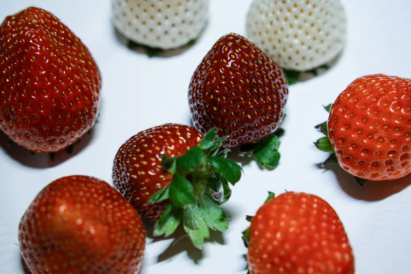

Crop-specific growing layout
Review the reference 2,016 planting-position configuration against canopy clearance, harvesting access and irrigation serviceability.
Unlike leafy greens, strawberries require careful planning for flowering, fruit set, pollination, canopy care, humidity and selective picking. GROWSPEC configures the BioCube Container growing platform to the requirements of the chosen strawberry programme.

The GROWSPEC BioCube Container technical dossier includes a strawberry reference layout showing up to 2,016 planting positions. This is a planning configuration, not a guaranteed number of saleable strawberries. The actual layout depends on cultivar, plant spacing, worker access and the chosen irrigation and growing programme.
An indoor strawberry farm must account for establishment, flowering, pollination, fruit development, pruning and repeated harvesting. These tasks interact with LED lighting, temperature, relative humidity, air movement, irrigation and nutrient management. The local climate and electrical supply also affect the engineering scope.

Review the reference 2,016 planting-position configuration against canopy clearance, harvesting access and irrigation serviceability.
Coordinate LED heat, transpiration, HVAC cooling and dehumidification with the fruiting programme and outdoor design conditions.
Define the pollination strategy, pruning plan, crop monitoring and marketable fruit grading before calculating operating expenses.
Profitability depends on cultivar, starting plants, fruit grades, crop health, worker hours and customer prices. GROWSPEC recommends documenting assumptions rather than promising a universal annual yield.
Select cultivar, starting plant type, irrigation method, crop schedule and target fruit grade.
Plan pollination, pruning, crop-stage lighting, HVAC operation, humidity and nutrient conditions.
Provide access for repeated picking, then model sorting, packaging, chilled storage and distribution losses.
Define intended fruit quality, harvest objective and starting plant material.
Review plant positions, tier spacing, rack access and irrigation arrangements.
Confirm electrical supply, cooling, dehumidification, water and drainage.
Use marketable fruit and realistic labor, utility and packaging costs.
Request a clear planting layout, lighting and climate basis, pollination approach, irrigation plan and operating-load specification. Output estimates and financial results are project assumptions requiring review.
Review project economics in our container farm cost and ROI guide ↗.
Equipment layouts and output assumptions are subject to project-specific technical verification.
Yes. The BioCube Container platform can be configured for strawberries using crop-specific lighting, climate, water and nutrient delivery, growing layout and controls. The final scope is quoted per project.
The GROWSPEC BioCube Container technical dossier lists up to 2,016 planting positions in a strawberry reference layout. Actual planting count depends on cultivar, access and final drawings.
The container platform integrates LED lighting, HVAC, humidity, ventilation and nutrient management. Settings and equipment sizing are reviewed for the crop programme and installation conditions.
Yes. Fruiting strawberries need pollination and flower management to be included in the operating plan. The method is selected for the cultivar and growing environment.
A container footprint cannot guarantee harvest. Cultivar, plant quality, crop cycle, pollination, management and fruit-grade criteria determine marketable output. Ask for an assumptions-based forecast.
Share the installation location, local utilities, intended cultivar and market, target production, operator resources and purchasing timetable.
Review the reference strawberry layout and equipment systems.
Calculate LEDs, HVAC and nutrient-system electricity.
Compare capital and operating assumptions.
Share your crop, location, production objective and utility requirements. We will review the suitable configuration and scope for quotation.
Email abbas@growspecbio.com if you have a technical brief or drawings. No fixed harvest, profitability or certification applies to every project configuration.